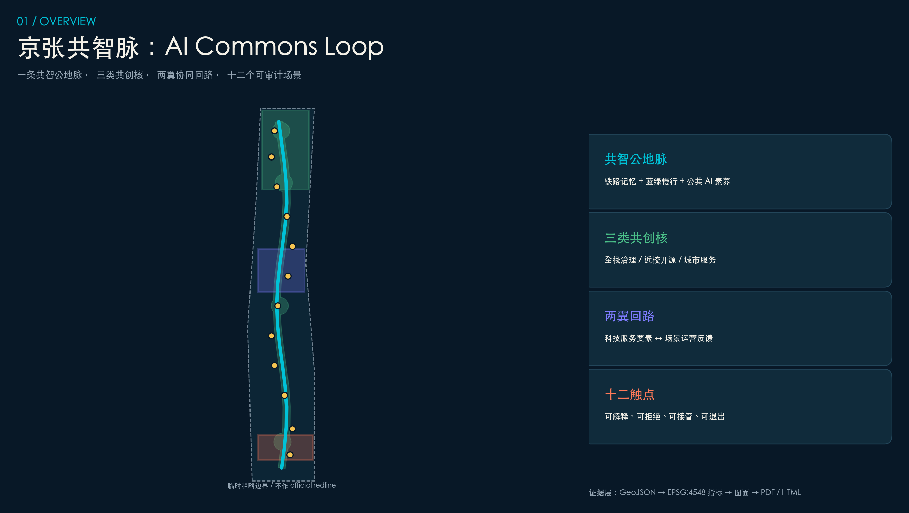
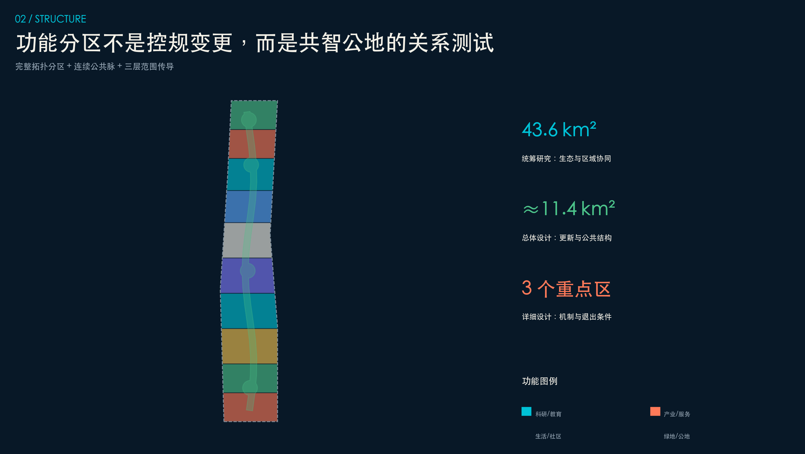
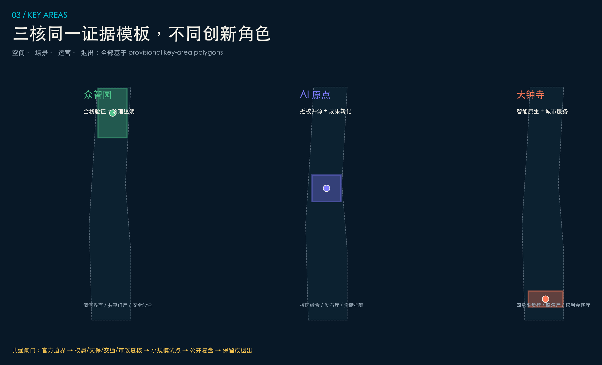
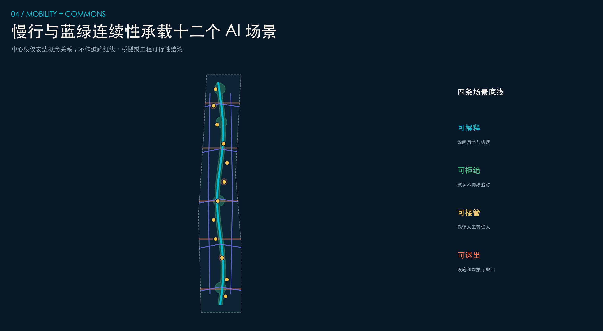
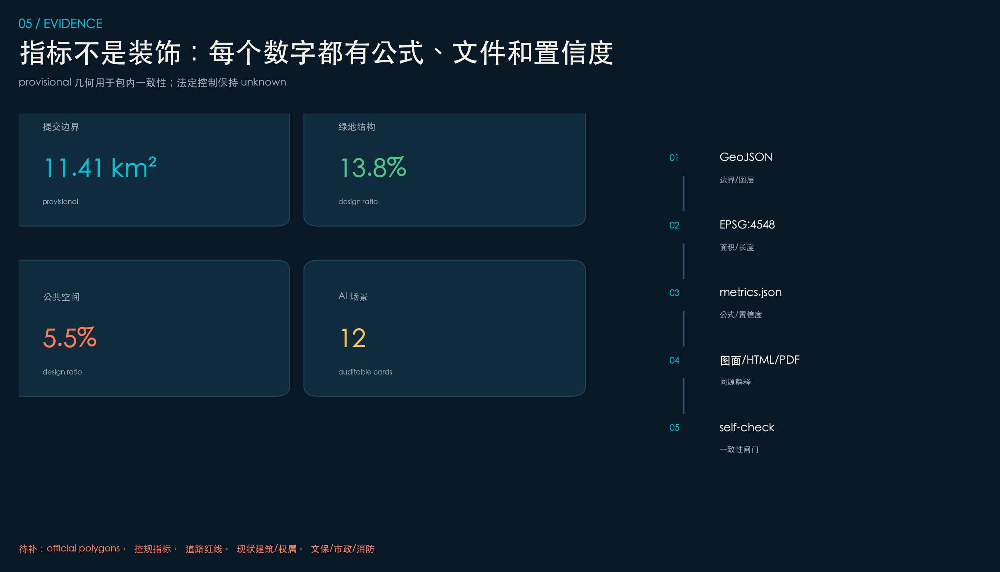

CENTENNIAL JING-ZHANG · OPEN AI URBAN DESIGN
京张共智脉
AI Commons Loop
一条共智公地脉、三类共创核、两翼协同回路、十二个可审计 AI 场景。让百年铁路记忆成为公共利益优先的创新基础设施。
边界状态：provisional rough。不得作为 official redline、控规、审批或精确面积依据；官方 polygon 到位后统一复算。
核心指标
提交边界11.41 km²包内一致性
绿地结构13.8%设计比例
公共空间5.5%设计比例
AI 场景12含 3 个产业测试
总览地图

三层范围 · 用地分区

从 43.6 km² 到三处重点区域
统筹研究范围组织产业与区域协同；总体设计范围组织更新、公共空间和设施支撑；重点区域用同一“空间-场景-运营-退出”证据模板深化。
公共性优先完整拓扑低扰动可退出重点区域

交通慢行 · 蓝绿公共空间

建筑 · 更新项目
可逆建筑原型
小基底、开放首层、可变共享空间；不对应现状建筑、权属或具体拆改留结论。
六类概念项目
共智导视、开源发布、安全沙盒、智能体路演、慢行会诊、AI Commons Week。每项均设置决策闸门与退出路径。
AI 场景
| 组别 | 场景 | 人类复核 |
|---|---|---|
| 产业测试 | 安全治理沙盒、端侧算力试验站、智能体路演厅 | 测试前清权、测试中隔离、测试后复盘 |
| 公共服务 | 无障碍慢行、维护助手、生活服务街 | 可解释、可拒绝、可接管、可申诉 |
| 文化运营 | 京张记忆站、开源档案馆、Commons Week | 史实编辑、贡献纠错、年度公开复盘 |
任务覆盖 · 自检状态
23 / 23 必答项
公告 1.3、1.4、1.5 与 agent.1-agent.6 全部映射到正文、图层、指标、A3/A0、来源、假设和自检。
证据链
GeoJSON → EPSG:4548 → metrics.json → 图面/HTML/PDF → deterministic self-check。

来源 · 假设
Formal 依据：官方公告、清权 agent taskbook、城市设计/控规/用地分类标准本地快照。Background-only：六个全球机制案例。Provisional-only：仓库临时粗略边界。
关键假设：边界、控规、道路、建筑/权属、文保、市政/消防、公共服务底数待补；建筑、道路与分期均为概念参考。